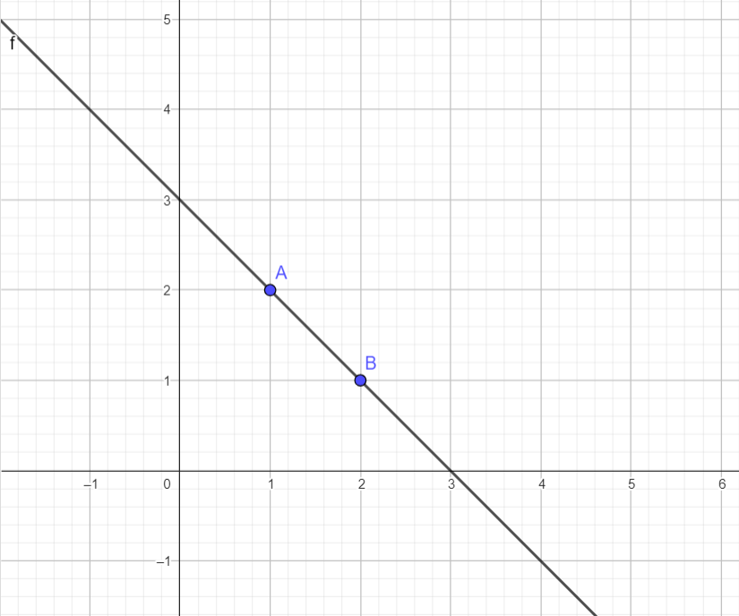
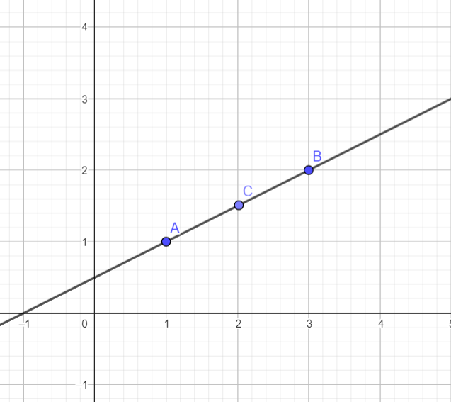

Kör
Meghatározás
A kör a síkban egy adott ponttól egyforma távolságra lévő pontok halmaza.
Tulajdonságok
A kör több tulajdonsággal is rendelkezik, ilyen a sugara, átmérője, kerülete stb. a következőkben ezekben fogunk foglalkozni.
Sugár
A sugár azt a távolságot jelöli, amely a kör középpontja és rajta lévő pontok között tálálható.
Középpont
A középpont az a pont, amelytől az összes körön lévő pont egyforma távolságra van.
Átmérő
Az átmérő a sugár meghosszabbítás a kör felületéig, így hossza megeggyezik a sugár hosszának kétszeresével.
Kerület
A kör kerületének képlete: K=2Rπ. Ahol R a kör sugara, a π pedig az irracionális szám, melynek megközelítő értéke 3,1415
Terület
A kör Területének képlete: T=R2π. Ahol R a kör sugara, a π pedig az irracionális szám, melynek megközelítő értéke 3,1415
Húr
A húr egy olyan szakasz, melynek mindkét végpontja a körön van.
Szögek
A körben megkülönböztetünk középponti szögeket, csúcsszögeket és köríveket.
Osztályozás
Középponti szög
Középponti szögnek nevezzük azt a szöget, amelynek szárai sugarak, tehát csúcsa a középpontban van.

Csúcsszög
A csúcsszög az a szög, amelynek szárai húrok. mértéke egyenlő a szárai közé eső körív mértékének a felével.
Körív
A körív az a része a körnek, amelyet két körön lévő pont kiválasztásával kapunk
Tompaszög
A Tompaszög olyan szög melynek mértéke 90 és 180 fok között mozog. Az ábrán látható AB és BA' félegyenesek 90 fokos szöget zárnak be.
Sík
A sík A sík egy végtelen, kétdimenziós felület, amely minden irányban kiterjed. Minden egyenes, amely két pontját összeköti, teljes egészében a síkban található. Az ábrán látható A,B és C pontok az X és Y tengely által meghatározott síkban vannak.